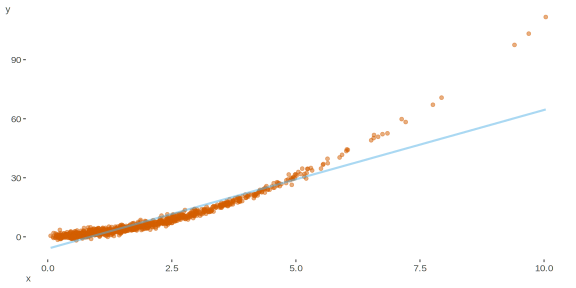
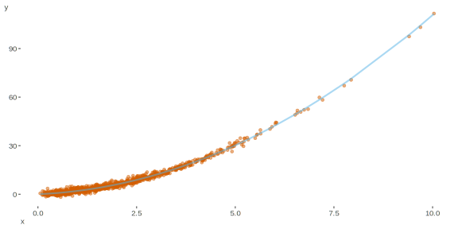
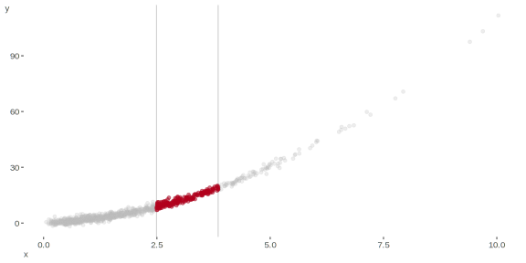
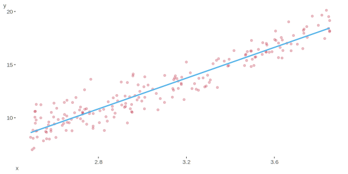
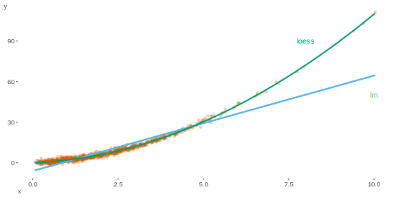
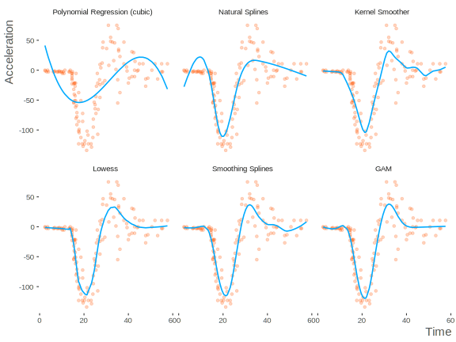

Introduction
Beyond the General Linear Model I
General Linear Model
Let’s get started by considering the standard linear regression model (SLiM) estimated via ordinary least squares (OLS). We have some response or target variable we wish to study, and believe it to be some function of other variables. In terms of the underlying data generating process, \(y\) is the variable of interest, assumed to be normally distributed with mean \(\mu\) and variance \(\sigma^2\), and the Xs are the features/covariates in this scenario. The features are multiplied by the weights/coefficients (\(\beta\)) and summed, giving us the linear predictor, which in this case also directly provides us the estimated fitted values. The following is a variant of the way this type of model is presented in introductory texts.
\[y\sim \mathcal{N}(\mu,\sigma^2)\] \[\mu = b_0+b_1\cdot x_1+b_2\cdot x_2\;...\;+ b_p\cdot x_p\]
Here is an example of how the R code would look like for such a model.
mymod = lm(y ~ x1 + x2, data = mydata)One of the issues with this model is that, in its basic form it can be very limiting in its assumptions about the data generating process for the variable we want to study. It also very typically will not capture what is going on in a great many data situations.
Generalized Linear Model
In that light, we may consider the generalized linear model. Generalized linear models incorporate other types of distributions1, and include a link function \(g(.)\) relating the mean \(\mu\), or stated differently, the expected values \(E(y)\), to the linear predictor \(X\beta\), often denoted \(\eta\). So the general form is:
\[g(\mu) = \eta = X\beta\] \[E(y) = \mu = g^{-1}(\eta)\]
Consider again the typical linear regression. In that situation, we assume a Gaussian (i.e. normal) distribution for the response, we assume equal variance for all observations, and that there is a direct link of the linear predictor and the expected value \(\mu\), i.e. \(\mu = X\beta\). As such, the typical linear regression model is a generalized linear model with a Gaussian distribution and ‘identity’ link function.
To further illustrate the generalization, we consider a distribution other than the Gaussian. Here we’ll examine a Poisson distribution for some vector of count data. There is only one parameter to be considered, \(\mu\), since for the Poisson the mean and variance are equal. For the Poisson, the (canonical) link function \(g(.)\), is the natural log, and so relates the log of \(\mu\) to the linear predictor. As such we could also write it in terms of exponentiating the right-hand side.
\[y \sim \mathcal{P}(\mu)\] \[\ln(\mu) = b_0+b_1\cdot x_1+b_2\cdot x_2\;...\;+ b_p\cdot x_p\] \[\mu = e^{b_0+b_1\cdot x_1+b_2\cdot x_2\;...\;+b_p\cdot x_p}\]
While there is a great deal to further explore with regard to generalized linear models, the point here is to simply to note them as a generalization of the typical linear model that we would all be familiar after an introductory course in modeling/statistics. As we eventually move to generalized additive models, we can see them as a subsequent step in the generalization.
Generalized Additive Model
Now let us make another generalization to incorporate nonlinear forms of the features, via a generalized additive model. This form gives the new setup relating our new, now nonlinear predictor to the expected value, with whatever link function may be appropriate.
\[ y \sim ExpoFam(\mu, etc.) \\ E(y) = \mu \\ g(\mu) = b_0 + f(x_1) + f(x_2) \;...\;+f(x_p) \]
So what’s the difference? In short, we are using smooth functions of our feature variables, which can take on a great many forms, with more detail on what that means in the following section. For now, it is enough to note the observed values \(y\) are assumed to be of some exponential family distribution, and \(\mu\) is still related to the model predictors via a link function. The key difference is that the linear predictor now incorporates smooth functions of at least some (possibly all) features, represented as \(f(x)\), and this will allow for nonlinear relationships between the features and the target variable \(y\).
Beyond the General Linear Model II
Fitting the Standard Linear Model
In many data situations, the relationship between some covariate(s) \(X\) and response \(y\) is not so straightforward. Consider the following plot. Attempting to fit a standard OLS regression results in the blue line, which doesn’t capture the relationship as well as we would like.

Polynomial Regression
One common approach we could undertake is to add a transformation of the predictor \(X\), and in this case we might consider a quadratic term such that our model looks something like the following.
\[ y \sim \mathcal{N}(\mu,\sigma^2)\\ \mu = b_0 + b_1\cdot x_1+b_2\cdot x^2 \] And here is how the model would fit the data.

We haven’t really moved from the standard linear model in this case, but we have a much better fit to the data as evidenced by the graph.
Scatterplot Smoothing
There are still other possible routes we could take. Many are probably familiar with loess (or lowess) regression, if only in the sense that often statistical packages may, either by default or with relative ease, add a nonparametric fit line to a scatterplot. By default, this is typically lowess, or locally weighted scatterplot smoothing.
Take a look at the following figure. For every (sorted) \(x_0\) value, we choose a neighborhood around it and, for example, fit a simple regression. As an example, let’s look at \(x_0\) = 3.0, and choose a neighborhood of 100 X values below and 100 values above.

Now, for just that range we fit a linear regression model and note the fitted value where \(x_0=3.0\).

If we now do this for every \(x_0\) value, we’ll have fitted values based on a rolling neighborhood that is relative to each value being considered. Other options we could throw into this process, and usually do, would be to fit a polynomial regression for each neighborhood, and weight observations the closer they are to the value, with less weight given to more distant observations.

The above plot shows the result from such a fitting process. For comparison, the regular regression fit is also provided. Even without using a lowess approach, we could have fit have fit a model assuming a quadratic relationship, \(y = x + x^2\), and it would result in a far better fit than the simpler model2. While polynomial regression might suffice in some cases, the issue is that nonlinear relationships are generally not specified so easily, as we’ll see next3.
Generalized Additive Models
The next figure regards a data set giving a series of measurements of head acceleration in a simulated motorcycle accident4. Time is in milliseconds, acceleration in g. Here we have data that are probably not going to be captured with simple transformations of the predictors. We can compare various approaches, and the first is a straightforward cubic polynomial regression, which unfortunately doesn’t help us much. We could try higher orders, which would help, but in the end we will need something more flexible, and generalized additive models can help us in such cases.

Summary
Let’s summarize our efforts up to this point.
- Standard Linear Model
\[y\sim \mathcal{N}(\mu, \sigma^2)\] \[\mu = b_0+b_1\cdot x_1\]
- Polynomial Regression
\[y\sim \mathcal{N}(\mu, \sigma^2)\] \[\mu = b_0+b_1\cdot x_1+b_2\cdot x^2\]
- GLM formulation
\[y\sim \mathcal{N}(\mu, \sigma^2)\] \[g(\mu) = b_0+b_1\cdot x_1+b_2\cdot x_2\]
- GAM formulation
\[y\sim \mathcal{N}(\mu, \sigma^{2})\] \[g(\mu) = f(X)\]
Now that some of the mystery will hopefully have been removed, let’s take a look at GAMs in action.